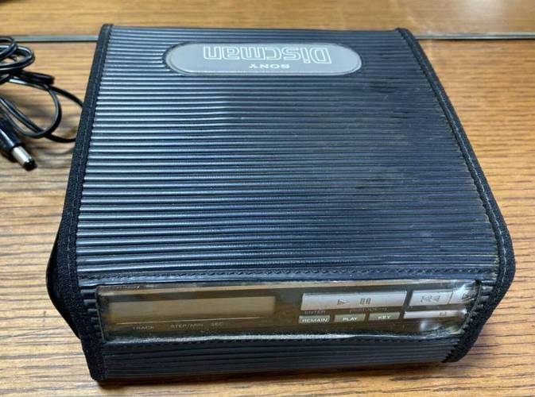

索尼 Discman D-50

1984 年上市的索尼 D-50（出口型号 D-5）是世界上第一款便携式 CD 播放机，只有四张 CD 盒叠起来大小、约 590 克，把家用 CD 音质带出家门。它与 Walkman 一同构成索尼随身音响的双子星，也是 Discman 时代的开山之作。
客观评测
索尼 Discman D-50（出口型号 D-5）于 1984 年上市，是世界第一款便携式 CD 播放机，支持 CD-DA 数字音频（16 位、20Hz–20kHz），提供 3.5 毫米耳机输出与上盖式光碟舱，机身约 13.3×13.2×3.7 厘米、约 590 克。机内无电池仓，需外接电源或选配电池盒，且不具备防震。首发 49,800 日元。
主观点评
D-50 是「把 Hi-Fi 装进口袋」的第一声宣言。四张 CD 盒叠起来那么大的机身、掀盖放入光盘的仪式感，在 1984 年近乎科幻。它的缺点今天看也很直白：没有防震、没有内置电池，走快两步就跳音——但正是这些不完美，记录了便携音响工程师与物理定律的第一次正面交锋。收藏 D-50 要留意激光头与排线状态，能顺畅读碟的整机已不多见；摆上书架，它就是 Discman 王朝的开国纪念币。
优点与不足
- 世界第一款便携 CD 播放机，把 CD 音质装进公文包
- 金属质感机身与机械上盖，做工扎实
- Discman 系列开山之作，索尼随身音响谱系关键节点
- 无内置电池，必须外接电池盒或电源适配器
- 无防震保护，走动时容易跳音
- 激光头老化与排线故障是二十余年后常见问题
参数规格
| 上市时间 | 1984 年（日本） |
|---|---|
| 产品类型 | 便携式 CD 播放机（Discman 系列首款） |
| 播放格式 | CD-DA 数字音频光盘 |
| 音频规格 | 16 位数字音频，20Hz–20kHz |
| 输出 | 3.5 毫米耳机输出 |
| 控制 | 播放/暂停、曲目跳选、音量旋钮 |
| 显示屏 | 曲目与播放状态指示 |
| 防震 | 无电子防震（随身移动易跳音） |
| 供电 | 外接 9V 电源适配器，或选配外置电池盒 |
| 电池 | 无内置电池仓（电池盒为选配件） |
| 尺寸 | 约 13.3×13.2×3.7 厘米 |
| 重量 | 约 590 克（主机） |
| 机身材质 | 金属上盖与工程塑料机身 |
| 光盘入仓 | 上盖式光碟舱 |
| 数字接口 | 无数字输出（模拟耳机输出） |
| 耳机 | 可搭配索尼 MDR 系列耳机（多为选购） |